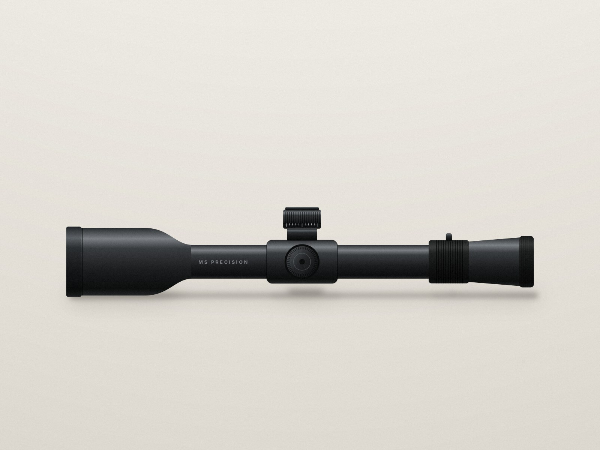
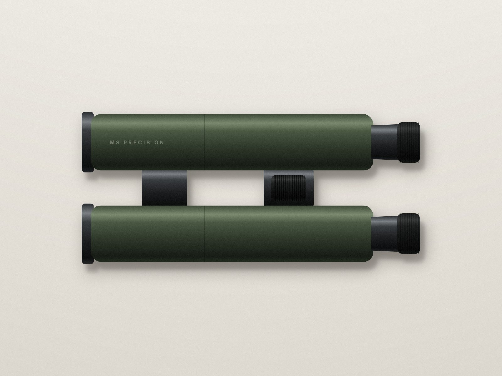

Gratis verzending vanaf € 150
Voor 16:00 besteld, morgen in huis
Persoonlijk advies van specialisten
Optiek voor jacht en sportschieten
Helder zicht, ook in het eerste licht.
Richtkijkers en verrekijkers van MS Precision zijn ontwikkeld voor de momenten dat het erop aankomt. Scherp tot in de schemering, betrouwbaar bij elke temperatuur.
Gratis verzending
Vanaf € 150, verzekerd
10 jaar garantie
Op alle MS-optiek
30 dagen bedenktijd
Rustig thuis uitproberen
Advies op maat
Van jagers, voor jagers
Kies je optiek
Bekijk het hele assortimentUitgelicht
Het meest gekozen dit seizoen

Bestseller
MS Optima 2.5–15×50 i
Verlicht dradenkruis, 30 mm buis
€ 1.249Op voorraad

MS Vector 5–25×56 FFP
Eerste brandvlak, MRAD-torens
€ 1.689Op voorraad

MS Hunt 1.5–9×40
Licht en snel, voor drukjacht
€ 749Nog 3 op voorraad

MS Field 10×42 ED
ED-glas, 780 gram
€ 899Op voorraad
Werkwijze
Elke kijker wordt gecontroleerd voordat hij de deur uit gaat.
We testen de klikwaarde van de torens, de parallax en de dichtheid van elk exemplaar. Pas als alles binnen de tolerantie valt, krijgt de kijker zijn certificaat mee in de doos.
0,1
MRAD per klik
IP67
Waterdicht
N₂
Stikstofgevuld
Advies
Welke richtkijker past bij jouw jacht?
Vertel ons hoe en waar je jaagt. Onze specialisten adviseren je over vergroting, objectief en dradenkruis, en monteren de kijker desgewenst op je wapen.
Plan een adviesgesprek
01
Aanzit en schemering
Groot objectief van 50 of 56 mm en een verlicht punt voor het laatste licht.
MS Optima 2.5–15×50 i
02
Drukjacht
Lage vergroting en een ruim beeldveld, zodat je bewegend wild snel oppakt.
MS Hunt 1.5–9×40
03
Lange afstand
Eerste brandvlak en precieze torens voor sportschieten en bergjacht.
MS Vector 5–25×56 FFP
Eén keer per maand, alleen wat nuttig is
Nieuwe modellen, onderhoudstips en uitnodigingen voor onze inschietdagen.